What I can do
I have experience with retail, e-commerce, customer service, human resources, operations, and administrative support across a variety of industries. I’ve worked at a toy store, a bar, a chocolate factory, an animal hospital, and an animation production studio. I’m never happy with just one project on my plate, and I love to learn new things. I have a keen editorial eye and am passionate about helping creators realize the best version of their own projects. See below for my work history and writing samples.
StashRiot is the e-commerce subsidiary of Frederator Networks. Originally founded to be a one stop hub for limited edition merchandise from a variety of fandoms, it has since become the shop exclusively for merchandise from the world of Frederator. Top brands include Adventure Time, Bravest Warriors, and Bee and PuppyCat. I am currently the only employee of StashRiot, which means I do everything from product design to copywriting and marketing to charge capture and customer service.
Visit StashRiot and check out the Instagram and Facebook pages.
Serious Moop Tees
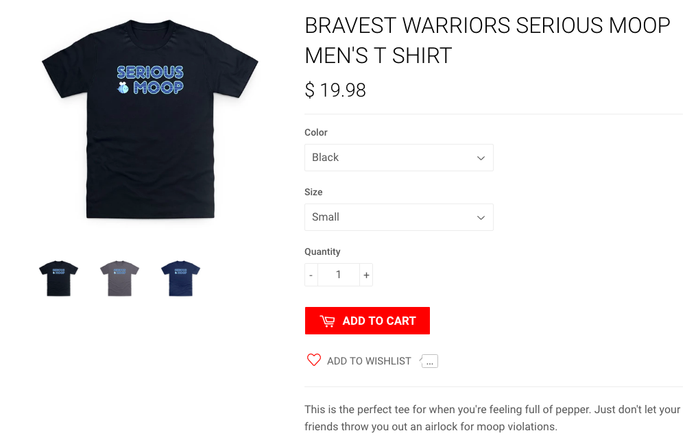
Here's the product page for a T-shirt I designed. I chose the slogan, which is a quote from the show Bravest Warriors, and wrote the product description.
I launched the shirt in Q3 2019 with an e-blast and social media campaign.
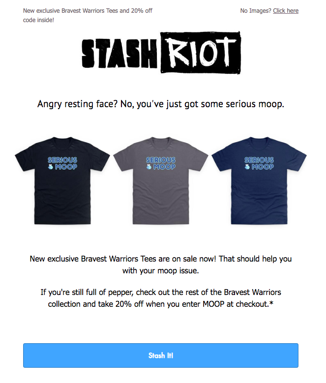 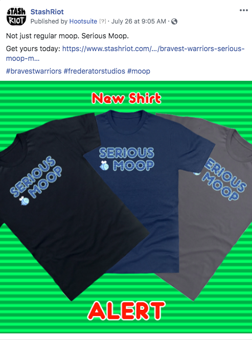 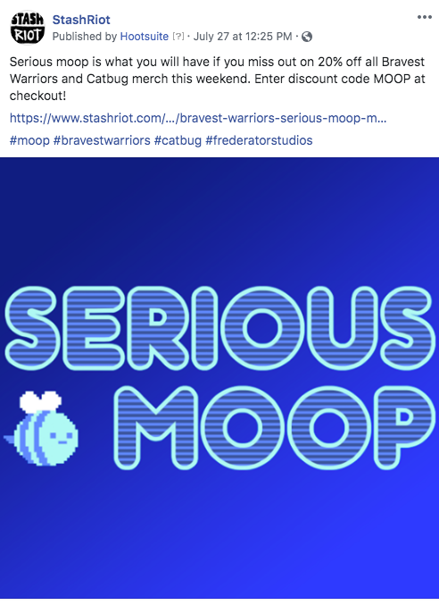
Gas Powered Pin Set
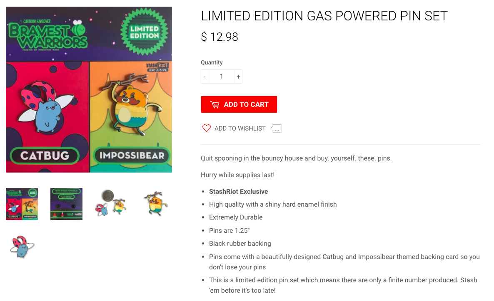
This pin set was designed by an intern under my direction in late 2018 and became a top seller soon after launching in Q1 2019. I'm really pleased with how they turned out and am proud of how well they've been received by fans.
I kicked off the social campaign with a few posts to drum up anticipation before the official announcement.
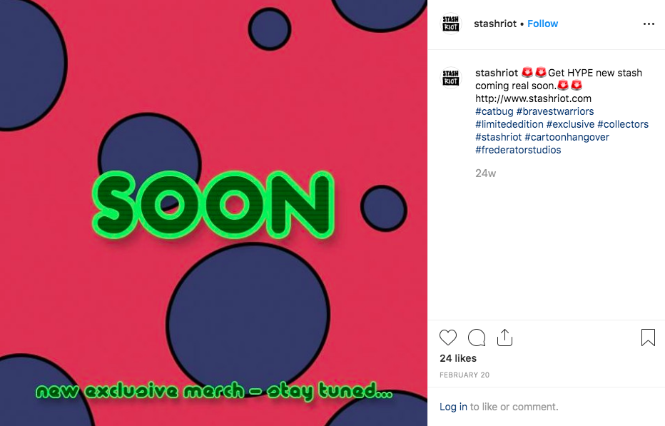 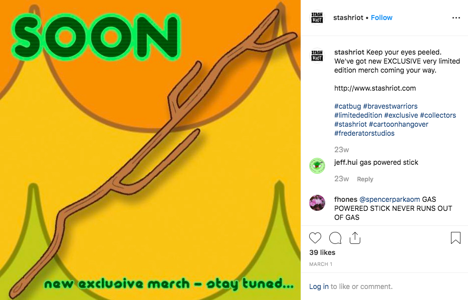
Since these pins are one of our few in-stock items (as opposed to print on demand) and we only made a limited run, I've been especially focused on conveying urgency in our social media campaigns. I'm anticipating that we will sell out by the end of 2019.
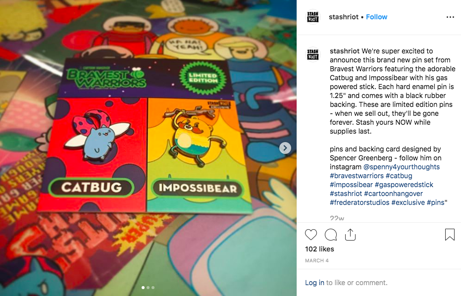 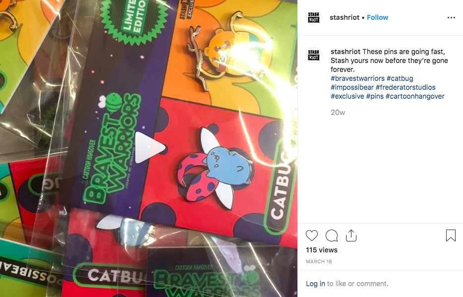
Social Media
Take a look at some of my other social media posts. Sometimes I'm funny. Sometimes I get to play with Photoshop. 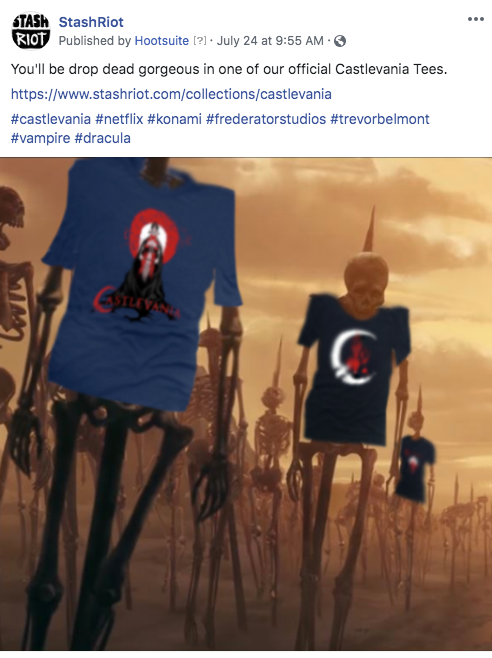
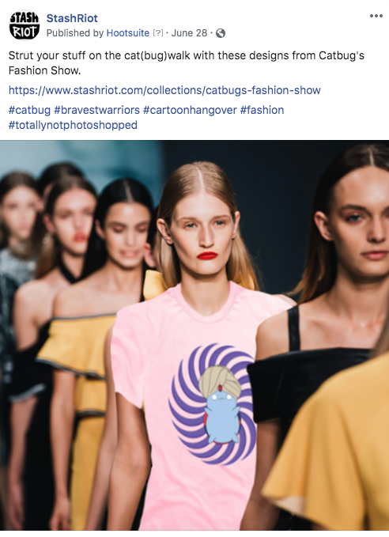
Here is a sample of some other posts that performed well on Instagram.
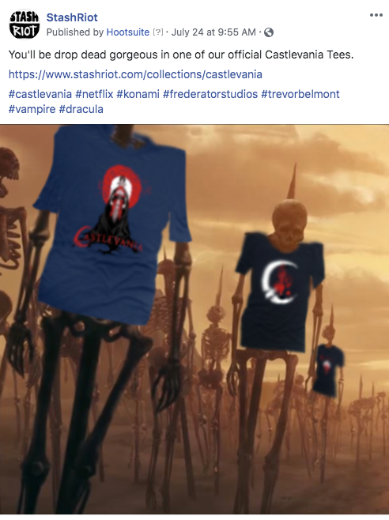
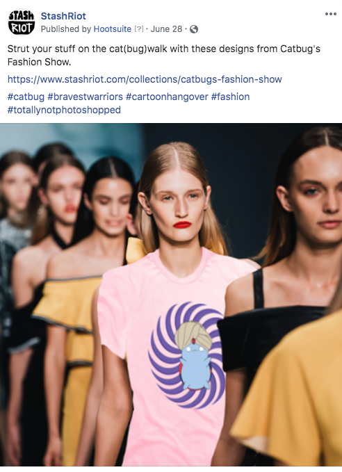
Here is a sample of some other posts that performed well on Instagram.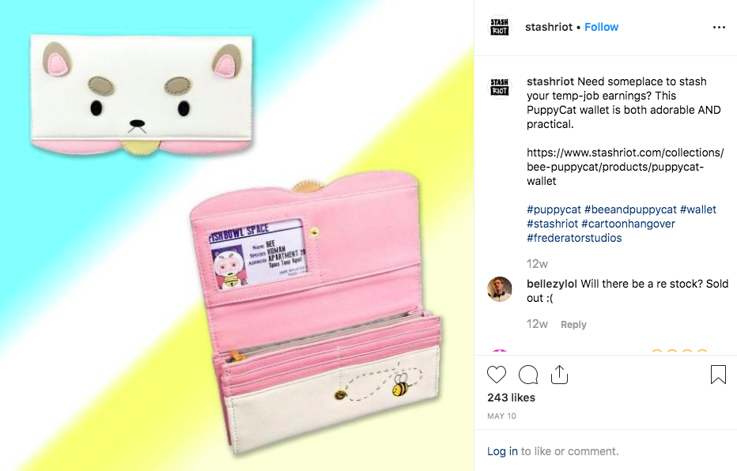 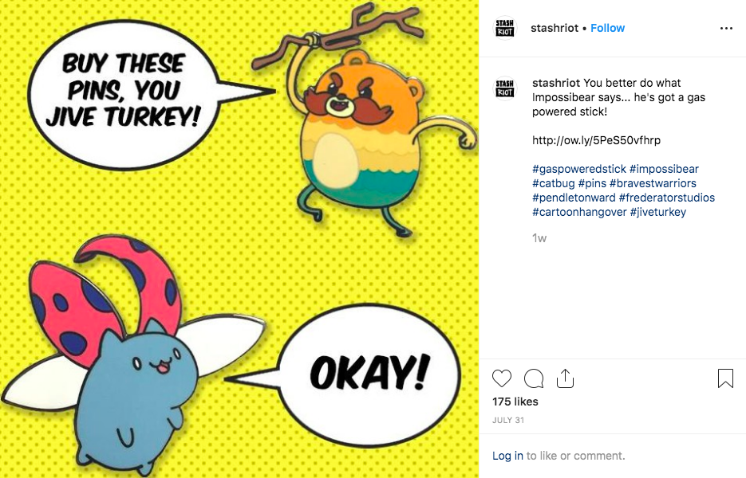
Every store has those people who feel the need to lecture about business models and complain about pricing structures. StashRiot has a fan who had regularly been posting disparaging comments. Initially we had ignored him, but enough was enough. I engaged in some light snarkiness and eventually got him to laugh. He hasn't posted any negative comments since.